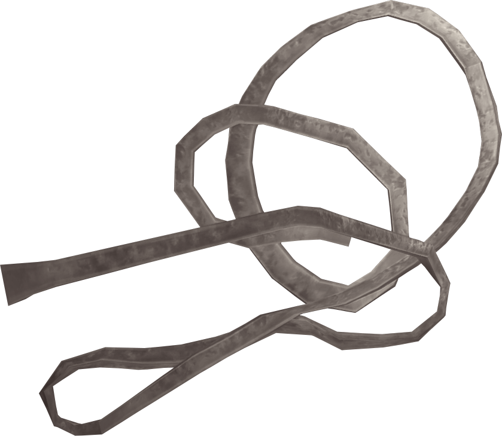

Asaldak's Moon Candy

Asaldak's Moon Candy is a favourite amongst the Cathay-raht. So Asaldak has been told. I suspect they give it to the Alfiq when Asaldak is not around.
Ingredients
- 1/4 cup from Sack of Flour
- 1/4 tsp from Salt Pile
- 1 stick (1/2 cup) of Butter
- 3/4 cup of Honey
- 1 1/2 tsp Extract from Vanilla Plant
- 2 cups Moon Sugar
How-To
- Mix the dry recipe ingredients in a bowl. Set aside
- In a pan, mix the sugar and butter. Bring to a boil and stir occasionally. Check the mixture dropping a small spoonful into cold water. Reach into the water and try to form a ball from the syrup with your claws. It if stays together for a few seconds then it's ready
- When ready, remove from the heat right away and pour over the flour mixture. Mix well
- Add Extract from Vanilla Plant. Mix in well too
- Pour mixture into strips and leave to cool
Return home